21 09 2014 (965 дней 1 час назад)
Ко дню Празднования Рождества Пресвятой Богородицы в селе Адзюбжа открылась новая Православная Церкрвь Рождества Пресвятой Богородицы. Храм Рождества Богородицы был построен в 1910 русскими православными миссионерами. Тогда строители возвели храм в византийском стиле, следуя традициям возведения абхазских церквей и соборов, - отмечается в исторической справке организаторов торжества.
Адзюбжинская церковь была действующей до 1928 года. После закрытия православных приходов по Абхазии церковь закрыли. Здание и все помещения в советский период были приспособлены под склад ядохимикатов для обработки цитрусовых плантаций. В 2002 году по инициативе кинорежиссера Ады Квирая начались работы по восстановлению храма. С 2005 года к проекту по восстановлению подключился Бинур Квирая. По его инициативе рядом с восстановленным храмом возведен памятник бойцам Восточного фронта, погибшим во время Отечественной войны народа Абхазии 1992-1993 гг., а также репрессированным жителям села Адзюбжа в 1928-1937гг.
20 сентября сего года в с. Адзюжба и.о. управляющего Абхазской Православной Церкви иерей Виссарион Аплиаа совершил чин освящения престола и храма Рождества Пресвятой Богородицы и возглавил Божественную литургию в новоосвященном храме. Иерею Виссариону сослужили: настоятель храма св. пророка Илии иерей Далмат Гопия, настоятель храма вмч. Георгия Победоносца иерей Александр Сергеев, настоятель храма свт. Николая иеромонах Давид (Гвазава), священник Собора Пресвятой Богородицы иерей Андрей Струцкий, священник женского Параскево-Вознесенского монастыря иерей Андрей Горбунов. За богослужением молились игумен монастыря свт. Иоанна Златоуста иеромонах Игнатий (Киут) и настоятель храма Преображения Господня иерей Никита Адлейба.
На литургии присутствовали избранный президент Республики Абхазия Рауль Хаджимба, помощник президента Астамур Тания, депутат Народного собрания РА Саид Харазия, председатель благотворительного фонда «Хочу верить» Юлия Павлюченкова, руководитель благотворительного фонда Ашана Джевейра Колосова, благотворители, прихожане из числа жителей с. Адзюжба, а также гости из других регионов Республики Абхазия. В день освящения престола был совершен Крестный ход вокруг храма.
По окончании богослужения иерей Виссарион сказал проповедь на абхазском, а затем на русском языках. Он поздравил жителей с. Адзюжба и гостей с открытием храма и отметил: «теперь вы можете исповедаться, причащаться и слышать Слово Божие в своем селе, которое подарило нам много выдающихся, знаменитых личностей. Я надеюсь, что такие открытия в дальнейшем приведут в храм Божий как можно больше людей, настанет мир и согласие». Так же иерей Виссарион предоставил слово избранному президенту Республики Абхазия Раулю Джумковичу Хаджимба. Глава государства поздравил всех с радостным событием и отметил, что сейчас время когда и светское государство получает новое развитие, и духовная жизнь народа выходит на новый виток развития». По окончании богослужения состоялась праздничная трапеза.
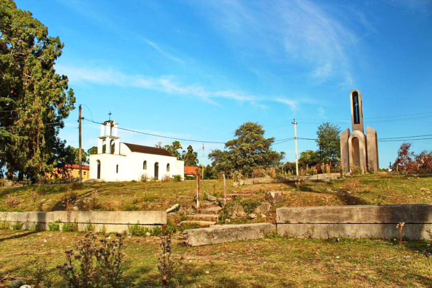
Адзюбжинская церковь была действующей до 1928 года. После закрытия православных приходов по Абхазии церковь закрыли. Здание и все помещения в советский период были приспособлены под склад ядохимикатов для обработки цитрусовых плантаций. В 2002 году по инициативе кинорежиссера Ады Квирая начались работы по восстановлению храма. С 2005 года к проекту по восстановлению подключился Бинур Квирая. По его инициативе рядом с восстановленным храмом возведен памятник бойцам Восточного фронта, погибшим во время Отечественной войны народа Абхазии 1992-1993 гг., а также репрессированным жителям села Адзюбжа в 1928-1937гг.
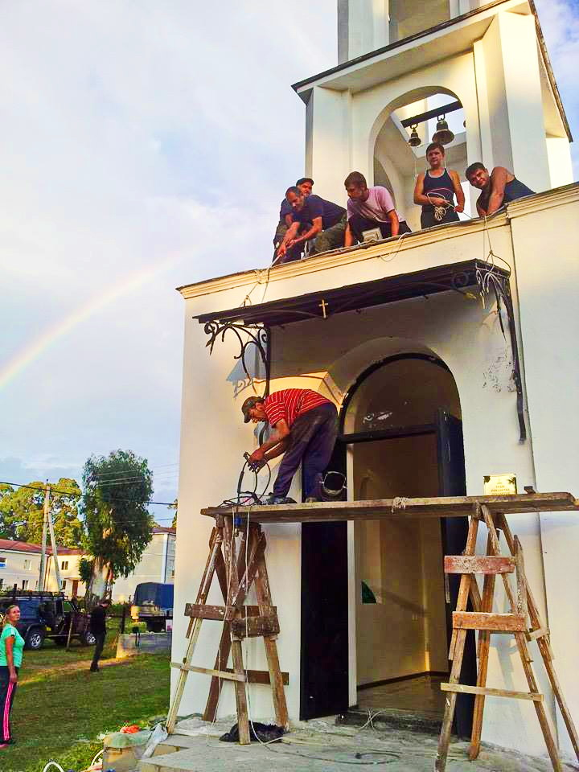
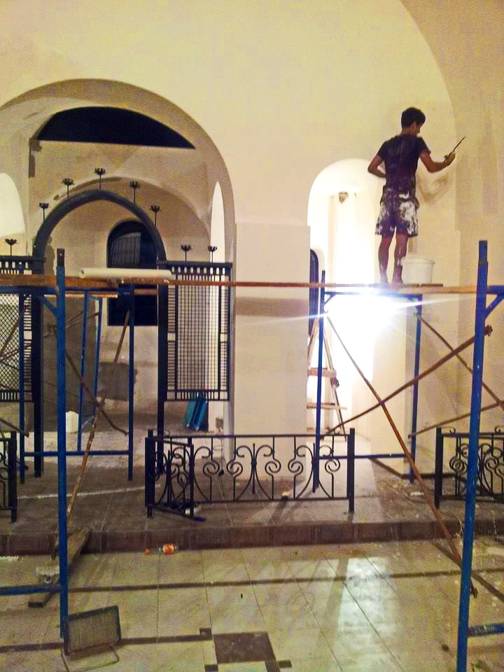
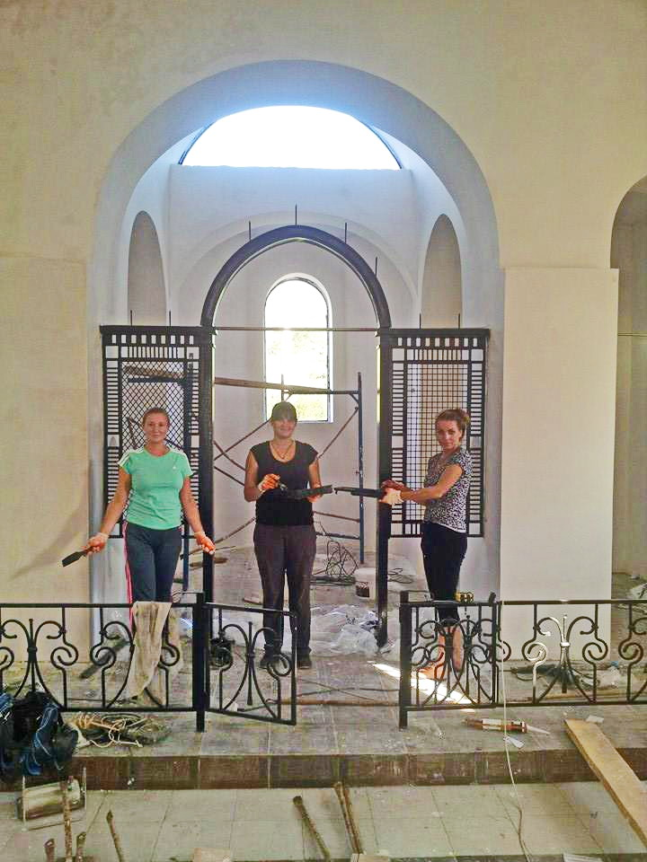
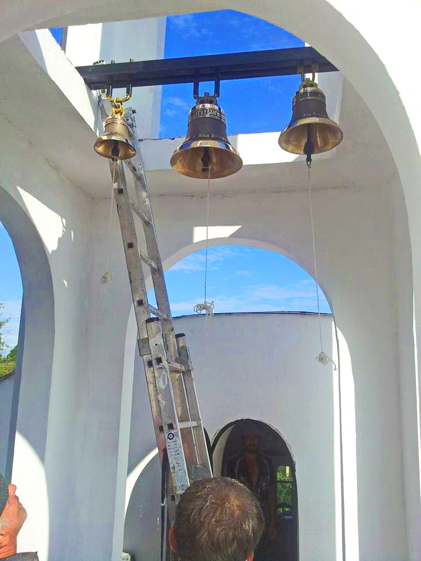
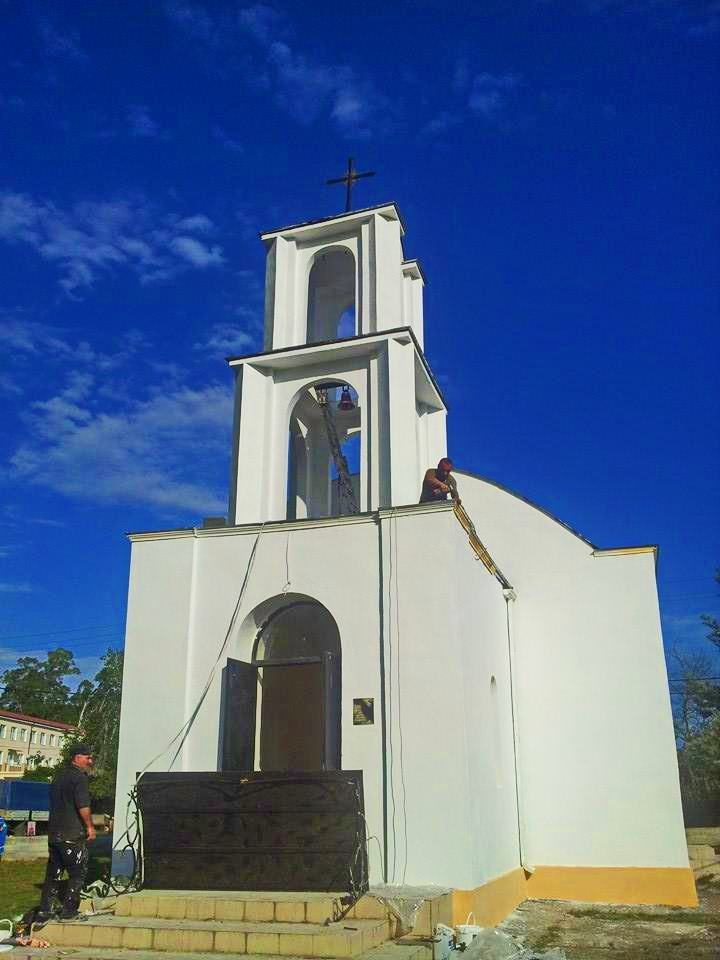
20 сентября сего года в с. Адзюжба и.о. управляющего Абхазской Православной Церкви иерей Виссарион Аплиаа совершил чин освящения престола и храма Рождества Пресвятой Богородицы и возглавил Божественную литургию в новоосвященном храме. Иерею Виссариону сослужили: настоятель храма св. пророка Илии иерей Далмат Гопия, настоятель храма вмч. Георгия Победоносца иерей Александр Сергеев, настоятель храма свт. Николая иеромонах Давид (Гвазава), священник Собора Пресвятой Богородицы иерей Андрей Струцкий, священник женского Параскево-Вознесенского монастыря иерей Андрей Горбунов. За богослужением молились игумен монастыря свт. Иоанна Златоуста иеромонах Игнатий (Киут) и настоятель храма Преображения Господня иерей Никита Адлейба.
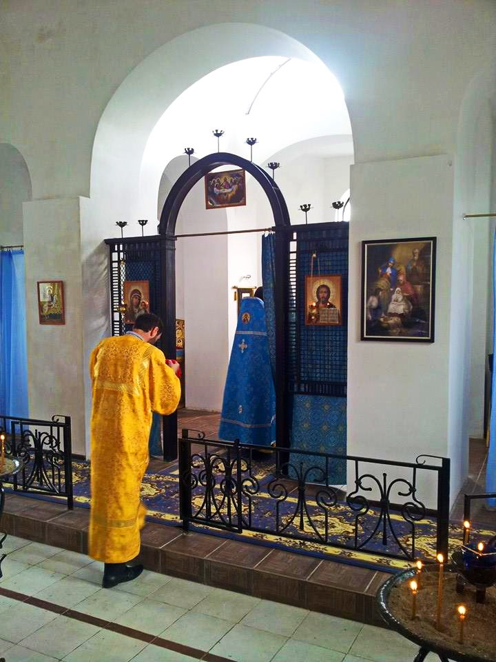
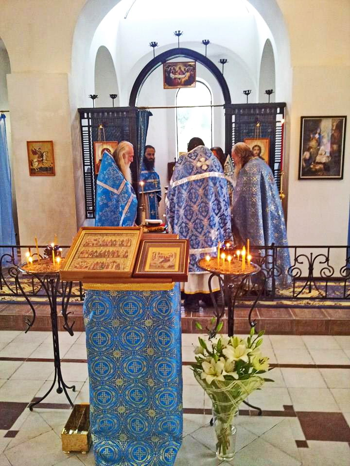
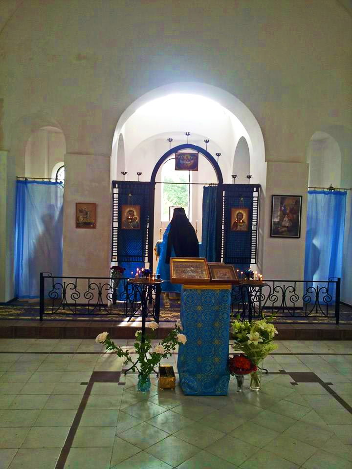
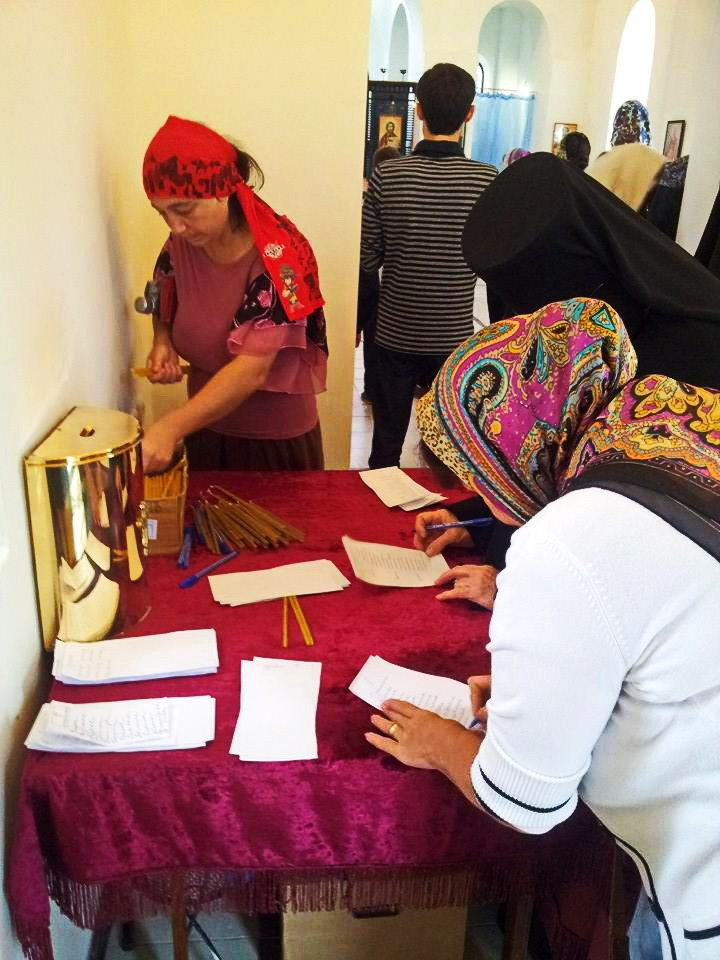
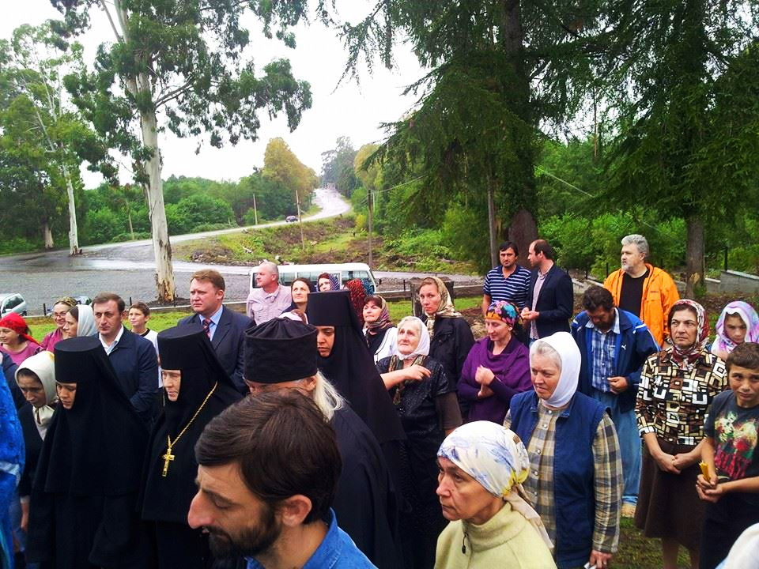
На литургии присутствовали избранный президент Республики Абхазия Рауль Хаджимба, помощник президента Астамур Тания, депутат Народного собрания РА Саид Харазия, председатель благотворительного фонда «Хочу верить» Юлия Павлюченкова, руководитель благотворительного фонда Ашана Джевейра Колосова, благотворители, прихожане из числа жителей с. Адзюжба, а также гости из других регионов Республики Абхазия. В день освящения престола был совершен Крестный ход вокруг храма.
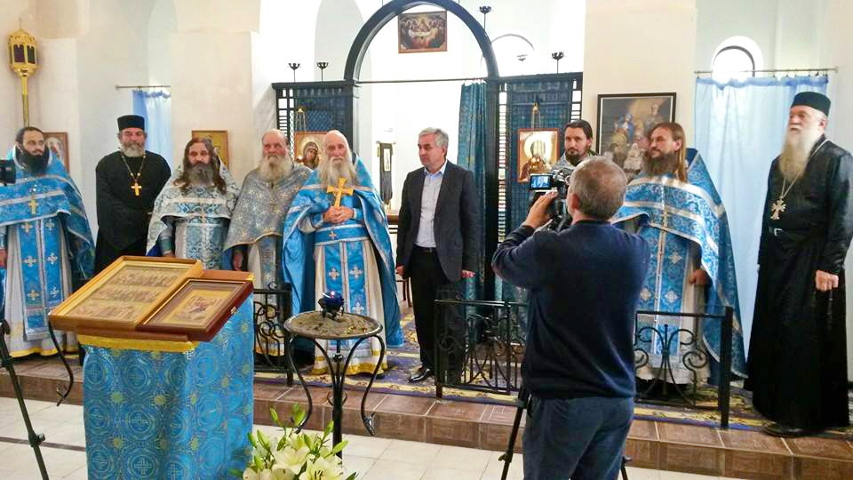
По окончании богослужения иерей Виссарион сказал проповедь на абхазском, а затем на русском языках. Он поздравил жителей с. Адзюжба и гостей с открытием храма и отметил: «теперь вы можете исповедаться, причащаться и слышать Слово Божие в своем селе, которое подарило нам много выдающихся, знаменитых личностей. Я надеюсь, что такие открытия в дальнейшем приведут в храм Божий как можно больше людей, настанет мир и согласие». Так же иерей Виссарион предоставил слово избранному президенту Республики Абхазия Раулю Джумковичу Хаджимба. Глава государства поздравил всех с радостным событием и отметил, что сейчас время когда и светское государство получает новое развитие, и духовная жизнь народа выходит на новый виток развития». По окончании богослужения состоялась праздничная трапеза.
Фреска Рождеста Пресвятой Богородицы Новоафонского монастыря. Абхазия
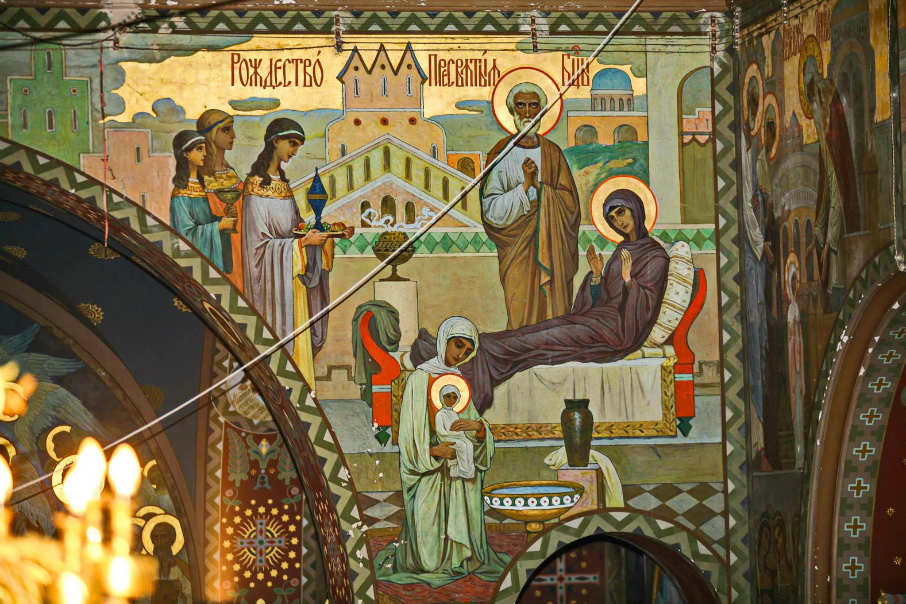